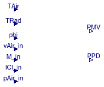

Library with models for comfort
Extends from Modelica.Icons.VariantsPackage (Icon for package containing variants).
| Name | Description |
|---|---|
| Fanger | Thermal comfort model according to Fanger |
| Collection of models that illustrate model use and test models |
Thermal comfort model according to Fanger

Thermal comfort model according to Fanger, as described in the ASHRAE Fundamentals (1997).
The thermal sensation of a human being is mainly related to the thermal balance of its body as a whole. This balance is influenced by two groups of factors, personal and physical. The activity level and clothing thermal insulation of the subject form the group of personal factors, while the environmental parameters: air temperature, mean radiant temperature, air velocity, and air humidity compose the group of physical factors. When the personal factors have been estimated and the physical factors have been measured the thermal sensation for the body as a whole (general thermal comfort) can be predicted by calculating the PMV index. The PPD index, obtained from the PMV index, provides information on thermal discomfort (thermal dissatisfaction) by predicting the percentage of people likely to feel too hot or too cold in the given thermal environment.
The Predicted Mean Vote (PMV) model combines four physical variables (air temperature, air velocity, mean radiant temperature, and relative humidity), and two personal variables (clothing insulation and activity level) into an index that can be used to predict the average thermal sensation of a large group of people.
To determine appropriate thermal conditions, practitioners refer to standards such as ASHRAE Standard 55 (ASHRAE, 1992) and ISO Standard 7730 (ISO, 1994). These standards define temperature ranges that should result in thermal satisfaction for at least 80% of occupants in a space.
The PMV index predicts the mean value of the votes of a large group of people on the following 7-point thermal sensation scale:
| Cold | Cool | Slightly cool | Neutral | Slightly warm | Warm | Hot |
| -3 | -2 | -1 | 0 | +1 | +2 | +3 |
For a given space there exists an optimum operative temperature corresponding to PMV=0 (neutral). The operative temperature is defined as: The uniform temperature of an imaginary black enclosure in which an occupant would exchange the same amount of heat by radiation plus convection as in the actual nonuniform environment. The operative temperature is computed as the average of the air temperature and the mean radiant temperature, weighted by their respective heat transfer coefficients (see ASHRAE Fundamentals, 1997, page 8.3, eq (8)).
Winter:
activity 1.2 met,
clothing = 0.9 clo (sweater, long sleeve shirt, heavy pants),
air flow = 30 fpm (0.15 m/sec),
mean radiant temperature equal to air temperature,
Optimum Operative Temperature (top) = 22.7° C (71° F)
Summer:
clothing = 0.5 clo,
air flow = 50 fpm (0.25 m/sec),
Optimum Operative Temperature (top) = 24.4° C (76° F).
All equation numbers in the model refer to the ASHRAE Handbook Fundamentals, Chapter 8, Thermal Comfort, 1997.
M = 46 to 232 W/m^2 (0.8 to 4 met)
ICl = 0 to 2 clo (0 to 0.310 m^2*K/W)
TAir_degC = 10 to 30° C
TRad_degC = 10 to 40° C
vAir = 0 to 1 m/s
pSte = 0 to 2700 Pa
Clothing is defined in terms of clo units. Clo is a unit used to express the thermal insulation provided by garments and clothing ensembles, where 1 clo = 0.155 (m^2*K/W) (ASHRAE 55-92).
The following table is obtained from ASHRAE page 8.8
| Clothing ensemble | clo |
|---|---|
| ASHRAE Standard 55 Winter | 0.90 |
| ASHRAE Standard 55 Summer | 0.50 |
| Walking shorts, short-sleeve shirt | 0.36 |
| Trousers, long-sleeve shirt | 0.61 |
| Trousers, long-sleeve shirt, suit jacket | 0.96 |
| Trousers, long-sleeve shirt, suit jacket, T-shirt | 1.14 |
| Trousers, long-sleeve shirt, long-sleeve sweater, T-shirt | 1.01 |
| Same as above + suit jacket, long underwear bottoms | 1.30 |
| Sweat pants, sweat shirt | 0.74 |
| Knee-length skirt, short-sleeve shirt, panty hose, sandals | 0.54 |
| Knee-length skirt, long-sleeve shirt, full slip, panty hose | 0.67 |
| Knee-length skirt, long-sleeve shirt, half slip, panty hose, long sleeve sweater | 1.10 |
| Long-sleeve coveralls, T-shirt | 0.72 |
| Insulated coveralls, long-sleeve, thermal underwear, long underwear bottoms | 1.37 |
One met is defined as 58.2 Watts per square meter which is equal to the energy produced per unit surface area of a seated person at rest.
The following table is obtained from ASHRAE page 8.6.
| Activity | W/m2 body surface area |
|---|---|
| ASHRAE Standard 55 | 58.2 |
| reclining | 45 |
| seated and quiet | 60 |
| sedentary activity (reading, writing) | 60 |
| standing, relaxed | 70 |
| office (filling while standing) | 80 |
| office (walking) | 100 |
| Sleeping | 40 |
| Seated quiet | 60 |
| Standing Relaxed | 70 |
| Walking 3.2 - 6.4km/h | 115-220 |
| Reading | 55 |
| Writing | 60 |
| Typing | 65 |
| Lifting/packing | 120 |
| Driving Car | 60-115 |
| Driving Heavy vehicle | 185 |
| Cooking | 95-115 |
| Housecleaning | 115-200 |
| Machine work | 105-235 |
| Pick and shovel work | 235-280 |
| Dancing-Social | 140-225 |
| Calisthenics | 175-235 |
| Basketball | 290-440 |
| Wrestling | 410-505 |
Extends from Buildings.BaseClasses.BaseIcon (Base icon).
| Type | Name | Default | Description |
|---|---|---|---|
| HeatFlux | W | 0 | Rate of mechanical work accomplished (must be non-positive, typically equal to 0) [W/m2] |
| CoefficientOfHeatTransfer | hRad | 0.8*4.7 | Radiative heat transfer coefficient [W/(m2.K)] |
| Conditional inputs | |||
| Boolean | use_vAir_in | false | Get the air velocity from the input connector |
| Boolean | use_M_in | false | Get the metabolic rate from the input connector |
| Boolean | use_ICl_in | true | Get the clothing insulation from the input connector |
| Boolean | use_pAir_in | false | Get the air pressure from the input connector |
| Velocity | vAir | 0.05 | Fixed value for air velocity [m/s] |
| HeatFlux | M | 60 | Fixed value for metabolic rate [W/m2] |
| Real | ICl | 0.7 | Fixed value for clothing insulation in units of clo (summer=0.5; winter=0.9) |
| Pressure | pAir | 101325 | Fixed value for air pressure [Pa] |
| Type | Name | Description |
|---|---|---|
| output RealOutput | PMV | PMV |
| output RealOutput | PPD | PPD [0.05...1] |
| input RealInput | TAir | Air temperature [K] |
| input RealInput | TRad | Radiation temperature [K] |
| input RealInput | phi | Relative humidity |
| input RealInput | pAir_in | Air pressure [Pa] |
| input RealInput | ICl_in | Clothing thermal resistance in clo |
| input RealInput | vAir_in | Air velocity |
| input RealInput | M_in | Metabolic heat generation in W/m2 (not in met) [W/m2] |